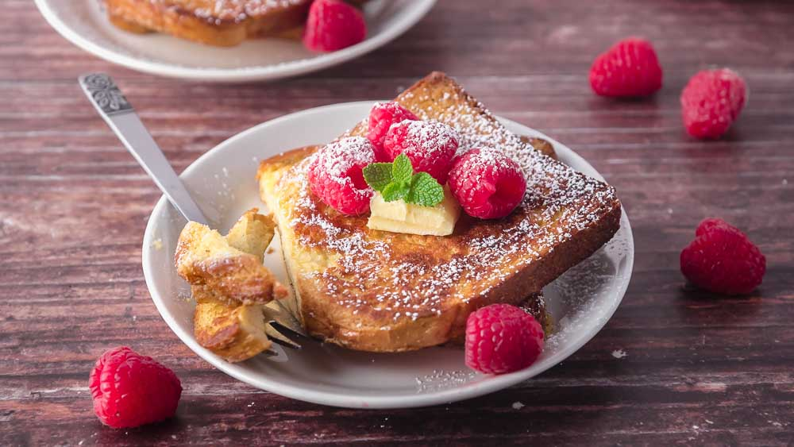

French Toast

Description
Wake up to an irresistibly delicious breakfast that's super quick and easy to whip up using a few basic ingredients you likely already have in your kitchen. This French toast recipe soaks thick slices of bread in a mixture of milk, vanilla extract, cinnamon, and an egg before tossing each slice in a frying pan. Fluffy and tender on the inside and perfectly golden-brown on the outside, making French toast is one of our favorite — and most indulgent! — breakfast dishes.
Ingredients
- 1 egg
- 1 teaspoon McCormick® All Natural Pure Vanilla Extract
- 1/2 teaspoon McCormick® Ground Cinnamon
- 1/4 cup milk
- 4 slices bread
Preparation
- Beat egg, vanilla and cinnamon in shallow dish with wire whisk. Stir in milk.
- Dip bread in egg mixture, turning to coat both sides evenly.
- Cook bread slices on lightly greased nonstick griddle or skillet on medium heat until browned on both sides. Serve with Easy Spiced Syrup (recipe follows), if desired. Voila, easy French toast.
- Easy Spiced Syrup: Add 1 teaspoon McCormick® Pure Vanilla Extract and 1/4 teaspoon McCormick® Ground Cinnamon to 1 cup pancake syrup; stir well to mix. Serve warm, if desired.